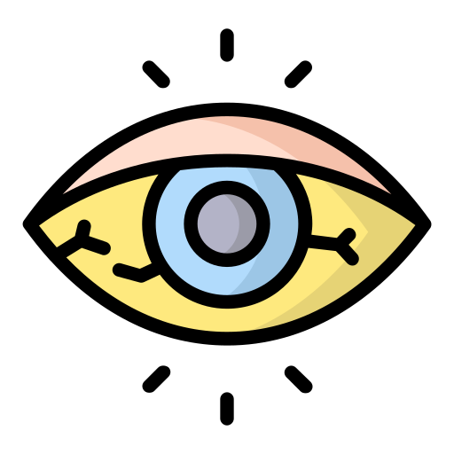

 新生兒黃疸
什麼是黃疸呢?
人體膽紅素的來源75 %來自老化的紅血球(血紅素)，經代謝成脂溶性的間接型膽紅素後，再由肝臟代謝成直接型膽紅素後再經由腸胃系統排出，因為胎兒在母體內是一個相對缺氧的狀態，紅血球數量會比成人多很多，但這個時期的紅血球壽命比較短，足月新生兒約80天，早產兒則可能更短，除此之外，新生兒肝臟功能不成熟，無法處理大量的膽紅素，由於血液中的膽紅素上升使得皮膚及眼睛開始變黃，因此造成新生兒黃疸，多數是輕微的症狀，但當黃疸指數過高並持久不退時，就要擔心是否有潛藏的疾病。
新生兒黃疸又分成三大類：生理性、母乳性、病理性，以下會依序介紹。
生理性黃疸
成因：
黃疸為新生兒常見的良性生理現象，因紅血球數量較成人多2-3倍，紅血球的壽命也比較短，並且肝臟發育未成熟，當紅血球被破壞所產的「未結合膽紅素」無法在肝臟經尿苷酸轉化酶作用成為結合膽紅素，進入腸道隨大小便排出體外時，就會累積在體內，造成血中膽紅素值升高。
症狀：
新生兒在出生24小時後出現生理性黃疸，當膽紅素值≧ 5mg/dl 時，皮膚、鞏膜會有泛黃的現象，第3-5 天達到最高峰，1-2 週後會逐漸褪去。
治療：
不需要特別治療，自身即可逐漸恢復。
母乳性黃疸
成因：
餵食母乳的嬰兒常常會有較久的黃疸，在第四到七天時特別明顯，我們稱作早發型母乳黃疸，而另一種母乳性黃疸是較少見的，約2%的母乳哺育嬰兒的黃疸持續較久，稱做遲發型母乳黃疸，可能是因為母乳內的某種荷爾蒙會產生競爭效應，抑制膽紅素的攝取與接合。
症狀：
症狀通常較輕微，只有臉部及軀幹會有黃疸的現象，通常在出生後7天發生，6~14天達到高峰，在1到3個月消退。
治療：
若是早發型母乳黃疸，主要是因為餵母乳的量、次數及熱量不足，造成膽紅素經腸肝循環的再吸收增加，通常只要增加餵母乳次數和熱量，就可以改善。另一種遲發型母乳黃疸，則可以嘗試停止母乳哺育24~48小時，通常膽紅素會迅速降低，且在幾天後回復至正常值，此時若再重新餵食母乳，膽紅素通常不會再上升，可以繼續母乳哺育。
病理性黃疸
成因：
通常出生後24小時內出現，可能會持續兩週以上，總而言之黃疸上升太早、太快、太高(>15)或是持續太久(>2週)就被稱為病理性黃疸，美國兒科醫學會認定膽紅素值≧ 18 mg/d為高膽紅素血症，若膽紅素數值太高甚至會導致膽紅素通過腦血管屏障造成腦損傷，而常見誘發原因有母子血型不合、蠶豆症、膽道閉鎖、感染等。
症狀：
除了黃疸外，還可能有感染、發燒、喘、膚色蒼白、嘔吐、腹脹、腹瀉、嗜睡等症狀，而嚴重的黃疸則可能出現燥動不安、肌肉張力過高、角弓反張、痙攣。
治療：
除了找出黃疸的根本原因外，還需要做到感染控制，必要時給予照光治療和換血治療。
新生兒黃疸該注意些什麼呢?
(1)當新生兒膚色愈來愈黃及出現吸吮力減弱、軟弱疲倦、嗜睡、嘔吐、發燒等症狀時，應立即回門診追蹤。
(2)了解母親和寶寶的血型(包含ABO血型及RH血型)。
(3)如果前一胎小孩發生過嚴重黃疸，下一胎有可能發生同樣情形，所以在懷孕及生產時應先告訴醫生，以預防治療。
影片介紹
參考資料
王信驊（2021）．寶寶黃了 新哺慌，認識新生兒黃疸．奇美醫訊，(132)，21-22。https://www-airitilibrary-com.autorpa.ntunhs.edu.tw:8443/Article/Detail?DocID=P20180523001-202103-202102230009-202102230009-21-22
李儒(2022年3月20日)．黃色警戒---新生兒黃疸。https://www.kgh.com.tw/Events/Article/207莊舜雯、羅佩佳、黃照伶、李延慧、彭雪芳、沈青青（2015）．運用黃疸辨識卡提升主要照顧者對新生兒黃疸膚色辨識之知能．榮總護理，32(4)，343-350。https://doi-org.autorpa.ntunhs.edu.tw:8443/10.6142/VGHN.32.4.343
親子天下媒體中心(2020年9月8日)．新生兒出現黃疸別驚慌！五大成因、處理方式一次看。https://www.parenting.com.tw/article/5087356羅佩佳、黃照伶、周惠婷、彭雪芳、沈青青（2019）．探討運用黃疸辨識卡對於提升主要照顧者新生兒黃疸膚色辨識之成效．榮總護理，36(4)，376-385。https://doi-org.autorpa.ntunhs.edu.tw:8443/10.6142/VGHN.201912_36(4).0006